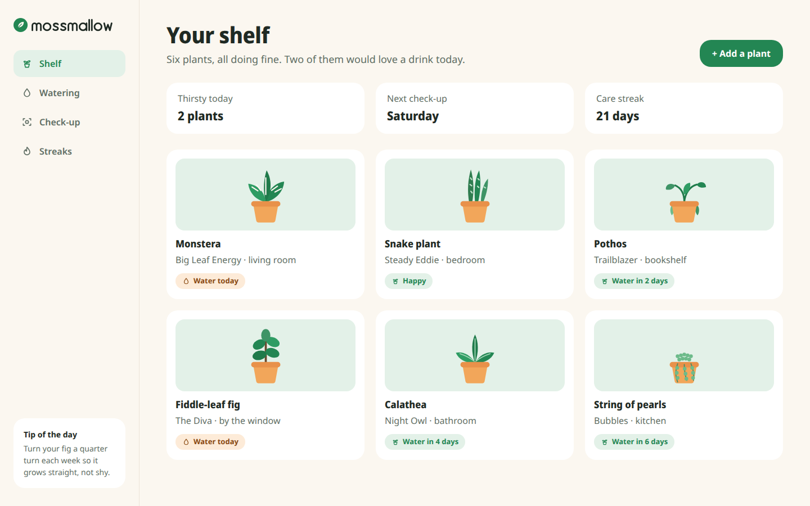
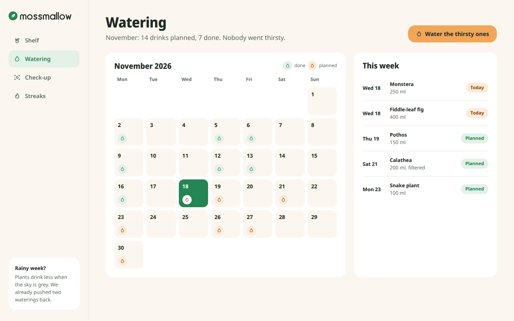
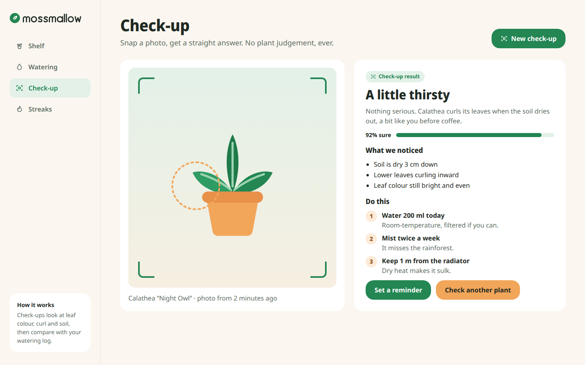
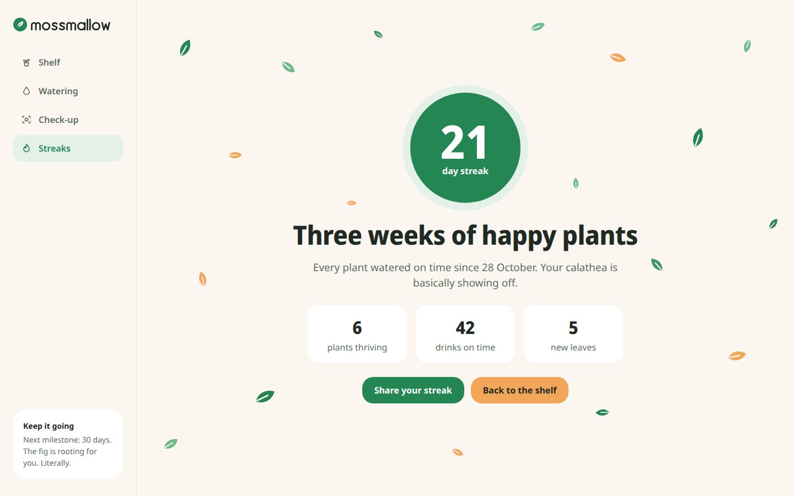

Reminders that know your plants
Light, season and pot size all count. Your snake plant will not drown on our watch.
Mossmallow reminds you, checks on them and celebrates every new leaf.

Your plants get a schedule, a check-up and a cheering section. You get your weekends back.



Light, season and pot size all count. Your snake plant will not drown on our watch.
Curling leaves? Brown tips? Point your camera and you will know what to do next.
Every new leaf gets a little party. Bragging is encouraged.